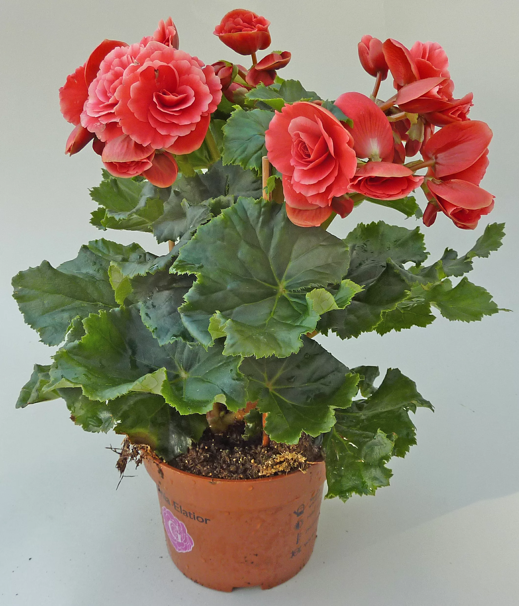
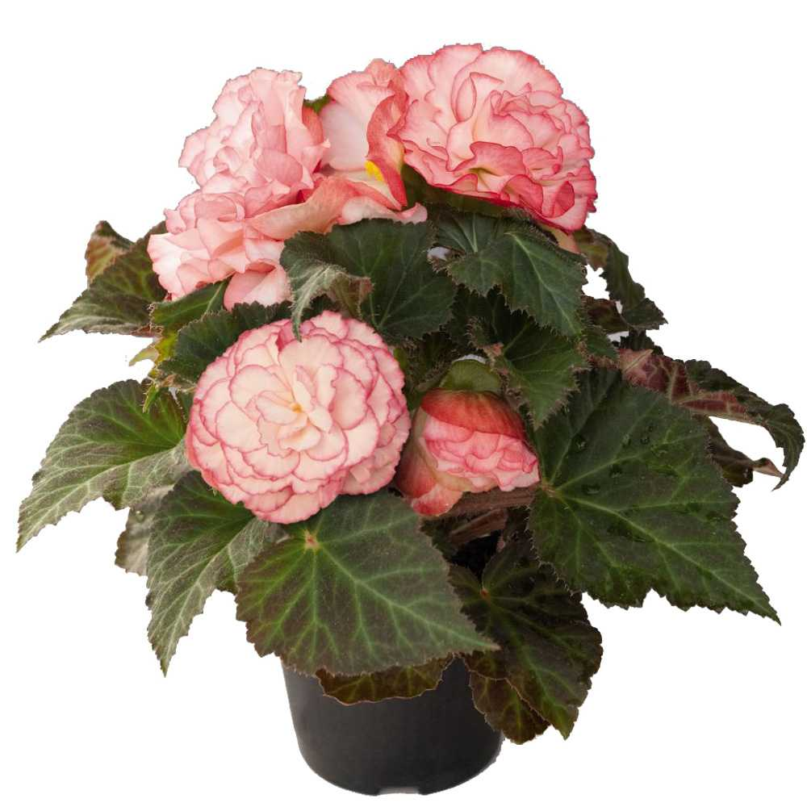
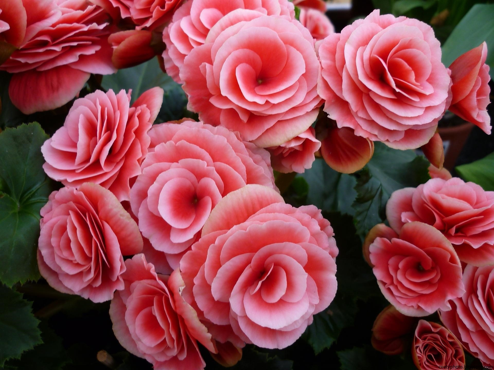
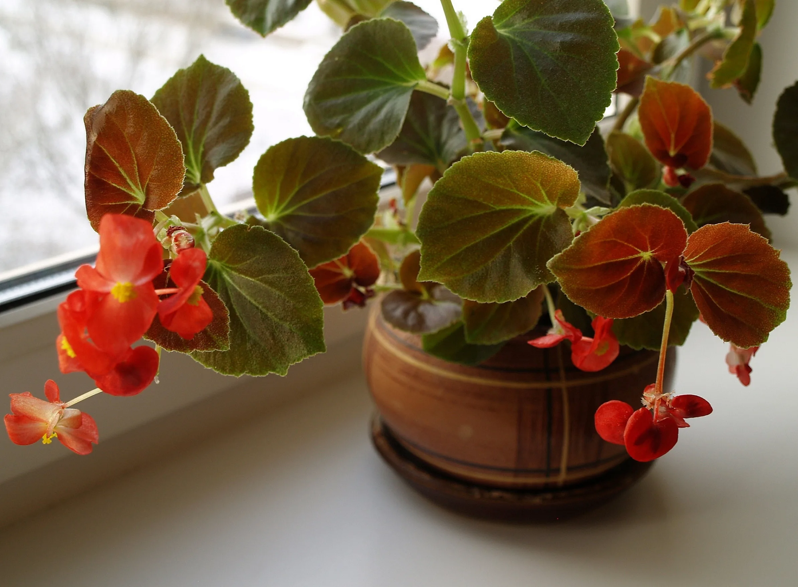

Бегонии представлены различными размерами и формами.
Они могут быть маленькими, компактными растениями или более крупными, с раскидистыми ветвями.
Листья бегоний часто имеют интересную текстуру, форму и окраску.
Они могут быть зелеными, красными, бронзовыми, серебристыми или сочетанием нескольких цветов.
Цветение бегоний также очень декоративно, с яркими и разнообразными цветками, часто с пышными соцветиями.
Галерея




Советы по уходу
Требования
Бегонии требуют яркого, непрямого света, умеренной температуры, умеренного полива, хорошо дренированного грунта и периодического удобрения. Они могут расти как внутри, так и снаружи, и предлагают разнообразие форм, окрасок и цветков, что делает их популярными выбором для украшения помещений или садовых клумб.